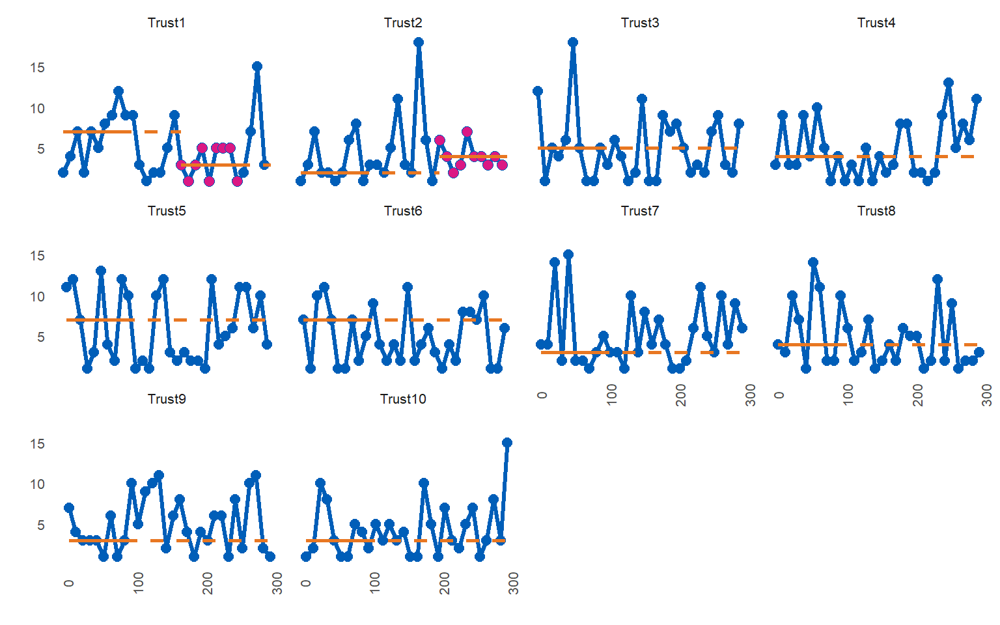
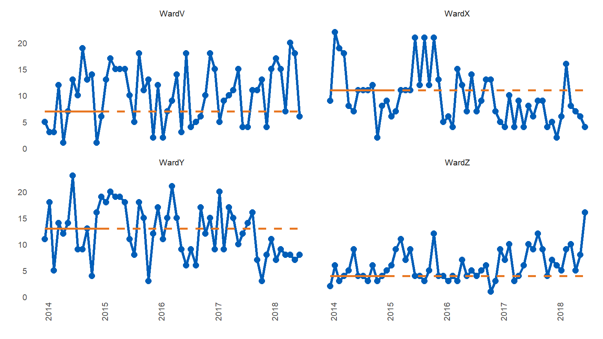

Rationale
Run charts are easy to create and analyse on an individual basis, hence they are widely used in healthcare quality improvement.
A run chart is a regular line chart, with a central reference line.
This central line, calculated using the median of a number of values over a baseline period, allows the QI team to assess if any statistically significant improvement is taking place, as a result of their improvement initiatives.
These improvements are denoted by certain patterns, or signals, within the plotted data points, in relation to the median line. The main signal is a run of 9 or more consecutive values on the desired side of the median line.
If this signal occurs as a result of improvement activities, but performance is not yet at the target level, a new median line can be plotted.
This is calculated using the median of the points that contributed to the signal. The aim is to then continue to work on improvement, measure and plot data, and look for the next sustained signal, until the improvement initiative is operating at its target level.
While this ‘rebasing’ (calculating new medians) is manageable for a few charts, it quickly becomes labour intensive as QI initiatives expand or further QI programmes are launched.
While enterprise level database software can be used to store the raw data, their associated reporting systems are usually ill suited to the task of analysing QI data using run chart rules.
This package automatically creates rebased run charts, based on the run chart rule for sustained improvement commonly used in healthcare ( 9 consecutive points on the desired side of the median).
All sustained runs of improvement, in the desired direction, will be highlighted and the median re-phased, using the points that contributed to the run.
Non useful observations (points on the median) are ignored and are not highlighted.
The main motivation is to analyse many charts at once, but you can also create and analyse a single run chart, or iterate, plot and save many individual charts.
The runcharter function - input
The function requires a simple three column dataframe, with the following column names:
- datecol : a column, typically of type ‘date’, but can be an integer representing individual patient IDs (for example).
- grpvar : a character column indicating a grouping variable to identify each individual run chart and for faceted plots. Factors will be converted to character.
- yval : the variable / value to plot.
Dataframe or data.table and use of the pipe
You can pass a dataframe, tibble or data.table to the function. It will be converted to data.table. You do not need to know data.table to use this package. The magrittr pipe is exported, so you can continue to use dplyr style syntax for data manipulation prior to using the function
library(runcharter)
#> Loading required package: data.table
testdf <- signals # rename the built in data set
class(testdf) # note class of tibble, tbl_df and dataframe
#> [1] "tbl_df" "tbl" "data.frame"
testdf %>% runcharter(
direction = "both",
datecol = "date",
grpvar = "grp",
yval = "y",
facet_cols = 2)
#> $runchart
#>
#> $sustained
#> grp median start_date end_date extend_to run_type
#> 1: WardV 7 2014-01-01 2015-01-01 2018-07-01 baseline
#> 2: WardX 11 2014-01-01 2015-01-01 2016-12-01 baseline
#> 3: WardY 13 2014-01-01 2015-01-01 2017-10-01 baseline
#> 4: WardZ 4 2014-01-01 2015-01-01 2017-06-01 baseline
#> 5: WardX 6 2016-12-01 2017-08-01 2018-07-01 sustained
#> 6: WardY 8 2017-10-01 2018-06-01 2018-07-01 sustained
#> 7: WardZ 9 2017-06-01 2018-03-01 2018-07-01 sustained
# results class data.tableruncharter function arguments
df : a three column dataframe or data table with columns specifying a grouping variable -‘grpvar’, a date column -‘datecol’ and ‘yvar’ as the value to plot on the y axis. The grouping variable should be a character column, however if a factor column is passed to the function it will be converted to character. Data frames will be converted to data.table
med_rows : How many rows / data points should the initial baseline median be calculated over?
runlength : How long a run of consecutive points do you want to find, before you rebase the median? The median will be rebased using all useful observations (points on the median are not useful, and are ignored).
direction : “above” or “below” the median, or “both”. Use “both” if you want to rebase the run chart any time a run of the desired length occurs, even if it is on the “wrong” side of the median line.
datecol : the name of the date column. If you are plotting individual observations in time order, you can also supply an ID value instead of a date.
grpvar : a character vector specifying the grouping variable used to facet the plots. Ordered factors will be converted to character during processing, and back to ordered factor prior to plotting.
yval : a numeric column to be plotted on the y-axis. Integers will be converted to numeric
facet_cols : the number of columns in the final faceted plot
chart_title : The main title for the chart
chart_subtitle : A subtitle for the chart
chart_caption : A caption for the chart
chart_breaks : character string defining desired x-axis date breaks e.g. “3 months”. Will be ignored if ‘datecol’ is an integer instead of a date value.
line_colr : Colour for run chart lines
point_colr : Colour for run chart points
median_colr : Colour for solid and extended median lines
highlight_fill : Fill colour to highlight points in a sustained run
… : further arguments passed on to function
The package exports the magrittr pipe, so you can chain commands using data.table syntax, or alternatively, use dplyr syntax and chain to the runcharter function
Function outputs
library(runcharter)
runcharter(signals ,med_rows = 13,
runlength = 9,
direction = "below",
datecol = "date",
grpvar = "grp",
yval = "y",
chart_title = "Analysis of runs below median",
chart_subtitle = "Example plot",
chart_caption = "analysed with runcharter",
chart_breaks = "6 months")
#> $runchart
#>
#> $sustained
#> grp median start_date end_date extend_to run_type
#> 1: WardV 7 2014-01-01 2015-01-01 2018-07-01 baseline
#> 2: WardX 11 2014-01-01 2015-01-01 2016-12-01 baseline
#> 3: WardY 13 2014-01-01 2015-01-01 2017-10-01 baseline
#> 4: WardZ 4 2014-01-01 2015-01-01 2018-07-01 baseline
#> 5: WardX 6 2016-12-01 2017-08-01 2018-07-01 sustained
#> 6: WardY 8 2017-10-01 2018-06-01 2018-07-01 sustainedPlot explanation
med_rowsdefines the initial baseline period. In the example below, the first 13 points are used to calculate the initial median. This is represented with a solid orange horizontal line. This median is then used as a reference for the remaining values, denoted by the extending orange dashed linerunlengthspecifies the length of run to be identified. Along withdirection, which specifies which side of median represents improvement, the runlength is your target number of successive points on the desired side of the median (points on the median are ignored as they do not make or break a run). You can set thedirectionas either “above” or “below” the line, to evidence improvement in a specific direction. Searching for runs in “both” directions is also possible. This might be more applicable for long term monitoring, rather than improvement purposes.
If a run is identified, the points are highlighted (the purple coloured points), and a new median is calculated using them. The median is also plotted and extended into the future for further run chart rules analysis, with a new set of solid and dashed horizontal lines.
The analysis continues, rebasing any further runs, until no more runs are found or there are not enough data points remaining.
library(runcharter)
runcharter(signals,
direction = "above",
datecol = "date",
grpvar = "grp",
yval = "y",
facet_cols = 2)
#> $runchart
#>
#> $sustained
#> grp median start_date end_date extend_to run_type
#> 1: WardV 7 2014-01-01 2015-01-01 2018-07-01 baseline
#> 2: WardX 11 2014-01-01 2015-01-01 2018-07-01 baseline
#> 3: WardY 13 2014-01-01 2015-01-01 2018-07-01 baseline
#> 4: WardZ 4 2014-01-01 2015-01-01 2017-06-01 baseline
#> 5: WardZ 9 2017-06-01 2018-03-01 2018-07-01 sustainedFind runs in both directions
Typically, you would only look for runs either “above” or “below” the median, depending on the nature of the metric you are studying and what determines an improvement (e.g. below the median for reduced admissions and above the median for increased care bundle compliance). You can also look for any run, occuring on either side of the median, by specifying “both” as the direction.
library(runcharter)
signals %>% runcharter(
direction = "both",
datecol = "date",
grpvar = "grp",
yval = "y",
facet_cols = 2)
#> $runchart
#>
#> $sustained
#> grp median start_date end_date extend_to run_type
#> 1: WardV 7 2014-01-01 2015-01-01 2018-07-01 baseline
#> 2: WardX 11 2014-01-01 2015-01-01 2016-12-01 baseline
#> 3: WardY 13 2014-01-01 2015-01-01 2017-10-01 baseline
#> 4: WardZ 4 2014-01-01 2015-01-01 2017-06-01 baseline
#> 5: WardX 6 2016-12-01 2017-08-01 2018-07-01 sustained
#> 6: WardY 8 2017-10-01 2018-06-01 2018-07-01 sustained
#> 7: WardZ 9 2017-06-01 2018-03-01 2018-07-01 sustainedNote that runs below the median are found for Wards X and Y, while a run above the median is highlighted for Ward Z.
The function will print the plot, and return a list, containing:
- the plot as a ggplot2 object,
- a datatable summarising the baseline median and each sustained period of improvement.
Don’t try this at home - setting runlength of 5 and searching in both directions to confirm that successive runs are identified. A run of 5 would not be a statistically significant shift in real life - the package defaults to 9 as the desired run length.
signals %>%
runcharter(med_rows = 7,
runlength = 5,
datecol = "date",
grpvar = "grp",
yval = "y",
direction = "both")
#> $runchart
#>
#> $sustained
#> grp median start_date end_date extend_to run_type
#> 1: WardV 5 2014-01-01 2014-07-01 2015-01-01 baseline
#> 2: WardX 11 2014-01-01 2014-07-01 2014-11-01 baseline
#> 3: WardY 14 2014-01-01 2014-07-01 2014-12-01 baseline
#> 4: WardZ 4 2014-01-01 2014-07-01 2015-01-01 baseline
#> 5: WardV 15 2015-01-01 2015-05-01 2015-10-01 sustained
#> 6: WardX 7 2014-11-01 2015-03-01 2015-04-01 sustained
#> 7: WardY 19 2014-12-01 2015-04-01 2015-06-01 sustained
#> 8: WardZ 7 2015-01-01 2015-05-01 2015-12-01 sustained
#> 9: WardV 11 2015-10-01 2016-02-01 2018-07-01 sustained
#> 10: WardX 11 2015-04-01 2015-08-01 2016-12-01 sustained
#> 11: WardY 15 2015-06-01 2015-10-01 2017-10-01 sustained
#> 12: WardZ 4 2015-12-01 2016-04-01 2017-06-01 sustained
#> 13: WardX 5 2016-12-01 2017-04-01 2018-02-01 sustained
#> 14: WardY 7 2017-10-01 2018-02-01 2018-07-01 sustained
#> 15: WardZ 9 2017-06-01 2017-10-01 2018-07-01 sustained
#> 16: WardX 7 2018-02-01 2018-06-01 2018-07-01 sustainedFactors instead of character groups
Factors can cause problems, so they are converted to character prior to processing. However, they are converted back prior to plotting, so that individual facets appear in the correct order.
library(NHSRdatasets)
library(runcharter)
LOSdata <- data.table::copy(LOS_model)
utils::str(LOSdata) # note that Organisation is an ordered factor, not character
#> 'data.frame': 300 obs. of 5 variables:
#> $ ID : int 1 2 3 4 5 6 7 8 9 10 ...
#> $ Organisation: Ord.factor w/ 10 levels "Trust1"<"Trust2"<..: 1 2 3 4 5 6 7 8 9 10 ...
#> $ Age : int 55 27 93 45 70 60 25 48 51 81 ...
#> $ LOS : int 2 1 12 3 11 7 4 4 7 1 ...
#> $ Death : int 0 0 0 1 0 0 0 0 1 0 ...
LOSdata %>% runcharter(med_rows = 9,
runlength = 9,
direction = "both",
datecol = "ID",
grpvar = "Organisation",
yval = "LOS")
#> $runchart
#>
#> $sustained
#> Organisation median start_date end_date extend_to run_type
#> 1: Trust1 7 1 81 171 baseline
#> 2: Trust10 3 10 90 300 baseline
#> 3: Trust2 2 2 82 202 baseline
#> 4: Trust3 5 3 83 300 baseline
#> 5: Trust4 4 4 84 300 baseline
#> 6: Trust5 7 5 85 300 baseline
#> 7: Trust6 7 6 86 300 baseline
#> 8: Trust7 3 7 87 300 baseline
#> 9: Trust8 4 8 88 300 baseline
#> 10: Trust9 3 9 89 300 baseline
#> 11: Trust1 3 171 251 300 sustained
#> 12: Trust2 4 202 292 300 sustainedTurn off run chart analysis
You can avoid rebasing medians by setting ‘runlength’ to 0 (zero). This will plot the runcharts with the original baseline medians, but no runs analysis will take place.
library(runcharter)
signals %>%
runcharter(med_rows = 13,
runlength = 0,
datecol = "date",
grpvar = "grp",
yval = "y",
direction = "both")
#> $runchart
#>
#> $sustained
#> grp median start_date end_date extend_to run_type
#> 1: WardV 7 2014-01-01 2015-01-01 2018-07-01 baseline
#> 2: WardX 11 2014-01-01 2015-01-01 2018-07-01 baseline
#> 3: WardY 13 2014-01-01 2015-01-01 2018-07-01 baseline
#> 4: WardZ 4 2014-01-01 2015-01-01 2018-07-01 baselineSimilarly, you can plot basic line charts by setting ‘med_rows’ to 0 (zero)
library(runcharter)
signals %>%
runcharter(med_rows = 0,
runlength = 9,
datecol = "date",
grpvar = "grp",
yval = "y",
direction = "both")
#> $runchart
#>
#> $sustained
#> grp median start_date end_date extend_to run_type
#> 1: WardV NA 2014-01-01 2014-01-01 2018-07-01 baseline
#> 2: WardX NA 2014-01-01 2014-01-01 2018-07-01 baseline
#> 3: WardY NA 2014-01-01 2014-01-01 2018-07-01 baseline
#> 4: WardZ NA 2014-01-01 2014-01-01 2018-07-01 baseline